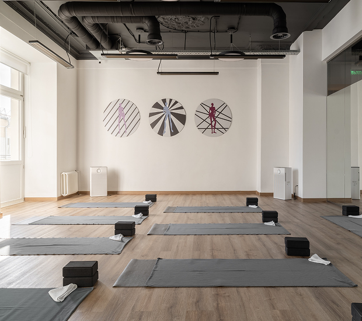
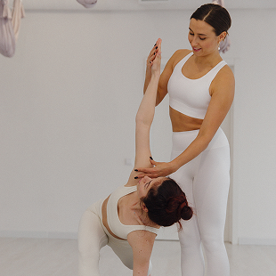
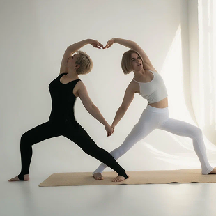
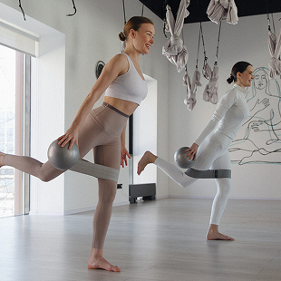
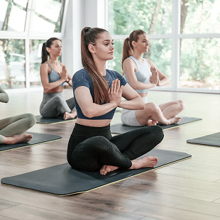

YOGA STUDIO
Наша студия комфортное пространство, которое объединяет людей, выбравших свое здоровье и осознанный образ жизни
ЗАПИСАТЬСЯ НА ПРОБНОЕ
О НАС
Когда мы начинали этот проект, мы искали не просто помещение с ковриками. Мы искали место, где можно замедлиться, прислушаться к себе и оставить суету за дверью.
Наша студия — это островок тишины в центре города. Здесь нет места соревновательному духу или спешке. Есть только дыхание, осознанное движение и уважение к каждому телу и его возможностям.
НАШИ ПРИНЦИПЫ
ИНДИВИДУАЛЬНЫЙ ПОДХОД
Мы не заставляем «дотянуться до носков». Йога — это про то, что подходит именно вам сегодня.

ЭКОЛОГИЧНОЕ СООБЩЕСТВО
У нас дружелюбная атмосфера, где вы не услышите критики, а встретите только поддержку.


КАЧЕСТВО БЕЗ ПАФОСА
Уютный зал, чистый воздух (увлажнители и очистители), теплый пол и профессиональный инвентарь.

ДОСТУПНОСТЬ БЕЗ ПОТЕРИ КАЧЕСТВА
Демократичные цены, гибкие абонементы и удобное расположение рядом с метро.
ПОЧЕМУ ВЫБИРАЮТ НАС?
5 причин, почему к нам приходят однажды и остаются с нами надолго:
Реальный прогресс за короткое время
Через месяц вы заметите: спина болит меньше, плечи расправлены, уходит отчётность. Через три — сядете на шпагат или впервые встаньте в баланс на руках. Мы фиксируем ваши достижения, и это мотивирует.
Преподаватели, которые решают проблемы, а не учат красиво стоять на коврике
Пришли с грыжей? Бессонницей? Паническими атаками? Усталостью? У нас есть специалист, который знает, как работать с вашим запросом. Не просто йога — йога, которая лечит.
Занятия под ваш ритм и настроение
Утром — бодрая Виньяса, чтобы проснуться. Днём — мягкий стретчинг для офисной спины. Вечером — Кундалини или Йога-Нидра, чтобы снять стресс и уснуть без таблеток. Выбирайте, что нужно сегодня.
Дышится легко даже в центре города
В зале — очистители и увлажнители воздуха, теплый пол и тишина (никакого гула вентиляции). Вы не просто занимаетесь — вы восстанавливаетесь в комфортной среде.
Сообщество, где вас ждут
После занятий пьём чай, обсуждаем книги, выезжаем на природу. Вы найдёте здесь не просто студию, а место, куда хочется возвращаться к своим людям.